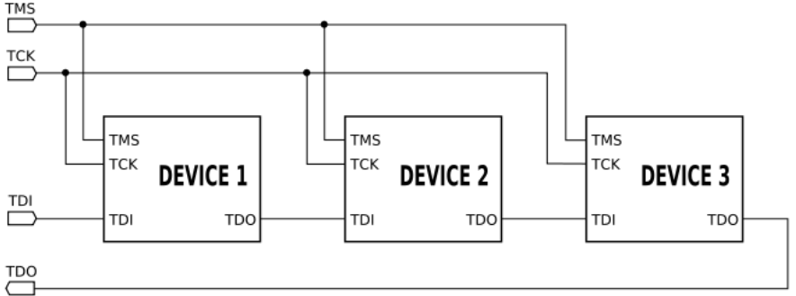
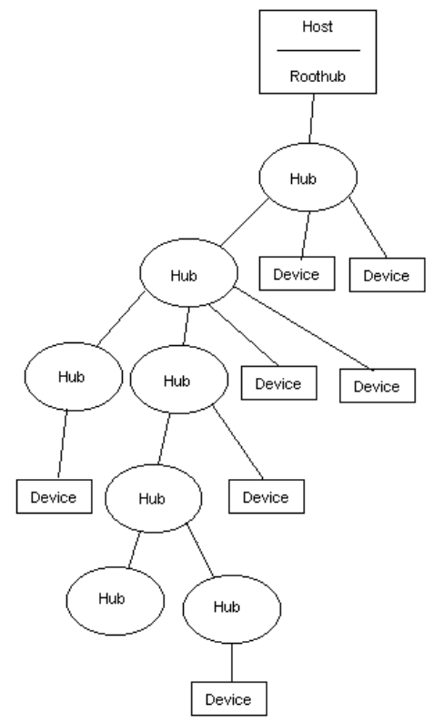
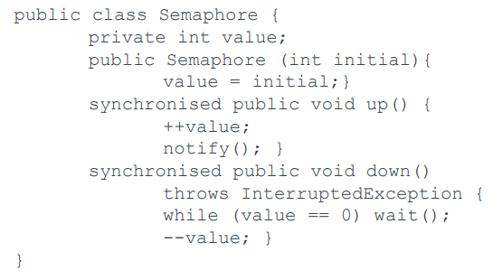
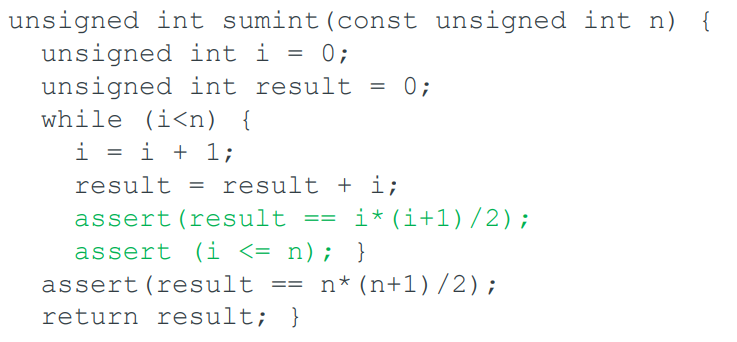
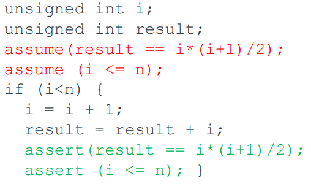

Real-Time Computing and Embedded Systems
Joshua Gregory
Intro 7
Syllabus 7
Introduction 8
What is Real-Time? 8
Correctness 8
Steps to (non-Real-Time) correctness 8
Embedded Development 8
Customer Lock-in 8
Tool Differentiation 9
Simple Development 9
Tempting Alternatives 9
mbed 9
Beware of Configuration Tools 9
ARM Cortex M 9
Documents 9
The Cortex M Family 10
ARM7 vs Cortex M3 (2006) 10
Cortex M0+ Implementation 12
Register Set 12
Memory Map 13
Magic Smoke 13
Keeping the magic smoke in 14
Valves (Vacuum Tubes) 14
CMOS 14
Latch-up is not so bad now 15
Wires are not nodes 16
Power/ground inductance is bad 16
Beware of earth loops 16
Absorb noise energy 16
Wires are transmission lines 16
Mismatched transmission lines 17
Skew 17
Ringing 18
Digital scopes lie 18
Ringing is bad 18
Clean up a clock 18
Keep your fingers out 19
A sense of smell is good 19
CISC and RISC 19
Von Neumann Architecture 19
Harvard Architecture 20
Von Neumann vs. Harvard 20
Modern View of Von Neumann Architecture 21
Structure of a Harvard architecture CPU 22
Modified Harvard Architecture 22
“Harvard Mark 1” 23
CISC and RISC 23
Example: CISC style 24
Example RISC style 24
Look at the x86 instruction set 24
RISC Philosophy 24
CISC Characteristics 25
One way of looking at it… 25
The RISC 1 (1981) 25
Other RISC families 25
MIPS 25
SPARC 26
Buses: on board 26
On-board buses 26
Classic On-board buses 26
Asynchronous serial interconnect 27
RS232 27
MAX232 27
Differential serial: RS422, RS485 27
Care is needed turning around RS485 28
I2C 28
I2C Chips 28
SPI 29
SPI does not need dedicated chips 30
JTAG 30
LVDS (TIA/EIA-644) 31
Buses: off board 31
Reliability / Safety 31
Off-board buses 32
RS232 32
CAN-BUS 32
CAN-BUS parts 32
USB 32
Firewire (IEEE1394) 32
Ethernet 33
W5500 SPI Ethernet 33
Don’t abuse RJ45 patch leads 33
USB 33
History 33
Evolution 34
PC interfaces were a mess 34
Basic characteristics of USB 34
Network and Connectors 34
Type C 35
Common cable colour assignments 36
Connector evolution 36
Speed 36
And the new Type C 36
A modern standard? 37
Software environment 37
A USB network is a tree 37
Power 37
Device States 38
On-the-go 38
Layered protocols: Low Speed Electrical 40
Bit layer 40
NRZI encoding of data bits 40
Bit-bash 40
Protocol layer 41
Four classes of packets 42
Transactions 42
Interrupt Transfers 43
Control Transfer 43
That’s a lot of layers 44
Communication Flow 45
Transfer Types 45
Endpoints 45
Device startup 46
Descriptors 46
Enumeration 48
Useful USB gizmo and books 48
Synchronisation 48
Synchronization 48
A sad story 48
Processes and Threads 49
Process C code 50
Thread C++ code 51
Table 51
Critical Regions 51
Solutions…. 51
Mutual Exclusion with Busy Waiting 52
Race Conditions 52
Another solution? 53
Peterson’s Solution 53
TSL 53
Test and Set on x86 54
Legacy 54
Mutual exclusion on the Cortex M0+ 54
Disabling interrupts on the M0+ 55
Non-busy synchronization: Sleep and Wakeup 55
Producer-consumer implementation with fatal race
condition 56
How do we fix this? 57
Java’s synchronized, wait() and notify() 57
Producer/Consumer in Java 58
Bad style 58
Just plain wrong 60
Semaphores 60
Producer-consumer problem using semaphores 61
Memory management 61
Semaphores in Java, before Java 1.5 62
Message Passing 62
Memory management etc. 63
Message queue sizes 63
Barriers 64
The Dining Philosopher 64
Java 65
Modifying solution… 68
Working Solution 69
Java Pthread 69
Java wait() is “truly horrid” 70
Java wait/notify unfairness 70
Java.util.concurrency 70
Old Style 70
New(ish) Style 71
AtomicInteger (or Long) is fast 71
POSIX C Semaphores 72
The Readers and Writers Problem 73
POSIXC 73
C 2011 language features 74
C++ 2011 74
Scheduling 74
Model Checking 74
Verifying the correctness of our code 74
What can a program do? 74
Assertions 75
What can go wrong? 75
Assert and Assume 76
Corrected version of program 76
Unbounded Model Checking Loops 76
Bounded Model Checking Loops 77
Replacement 77
We now have ordinary algebra 78
Feed the expression to an SMT solver 78
Proof By Induction 78
Inductive Proof 79
The invariant 79
Not quite enough 80
Where do these invariants come from? 80
Now the proof falls into three parts: 81
Base case 81
Inductive step 81
Termination condition 82
It is all much harder in practice 82
DSP 82
Model Checking Synchronisation 82
ESBMC 82
Automata 82
FreeRTOS Example? 83
Lab Stuff? 83
TL;DR 83
What is a real time system? 83
Three types of correctness: 83
Make real time system correct 83
Embedded Development 84
ARM Cortex M 84
Magic Smoke 86
Von Neumann, Harvard, CISC and RISC 87
On-board Buses 87
Off-board Buses 88
USB 88
Synchronisation 90
Processes and Threads 90
Process C code 90
Thread C++ code 91
Table 92
Critical Regions (Critical Sections) 92
Race Conditions 92
How will we solve these problems? 93
Peterson’s Solution 93
Peterson’s Solution Code 93
Busy waiting: 94
Volatile Keyword Note 94
Test and Set Lock (TSL) 94
Non-busy synchronization 95
Sleep and Wakeup 95
Implementations in Java 95
Code (for Producer/Consumer) 95
Fairness 96
Semaphores 96
Producer/Consumer with Semaphores Code 97
POSIX 98
Message Passing 98
Code in C Producer/Consumer 98
Barriers 99
The Dining Philosophers Problem. 99
Java code; working solution 100
Model Checking 101
Other stuff we sadly didn’t get to do in a real time
module 102
Intro
Basically this is a summary of the slides. Okay this module was
a bit of a mess with the lectures, so following shows the
updated syllabus Denis showed us on the last lecture before
christmas.
Syllabus
-
Definition of real-time
-
Temporal and event determinism
-
Architecture review and interfacing
-
Interrupts, traps and events
-
Response times and latency
-
Real-time clocks
- DSP
-
Safety critical
-
Small embedded
-
Large-scale distributed
-
Low-level programming for real-time
- I/O
-
Concurrency: memory models and synchronisation
primitives
-
Monitors/condition variables
-
Semaphores
-
Optimistic scheduling
-
ARM and Intel assembly language, integration with C
-
Architectural issues, memory models
- RMS
- EDF
-
Priority inversion
-
Time triggered
-
Protected modes, virtual memory
-
Device drivers
-
Internet of things: TinyOS & Contiki
-
FreeRTOS
-
Real-Time Linux
-
C and C++ standards: MISRA
-
Concurrency Issues
-
Process algebras
-
Model checkers, temporal logic
-
Example systems/applications
-
Hand-on experience with software development
-
Operating systems (eg ContikiOS, FreeRTOS, Android)
Introduction
What is Real-Time?
A real-time system is any information processing system which
has to respond to externally generated input stimuli within a
finite and specified period.
In computer science, real-time computing (RTC), or reactive
computing describes hardware and software systems subject to a
"real-time constraint", for example from event to
system response. Real-time programs must guarantee response
within specified time constraints, often referred to as
"deadlines". [-Wiki]
-
The correctness depends not only on the logical result but
also the time it was delivered.
-
Failure to respond is as bad as the wrong response!
Correctness
-
Partial correctness: If a result is returned, it is
correct. Established using invariants.
-
Total correctness: Will terminate and returns a correct
result. Troubled by the halting problem.
-
Real-time correctness: will return a correct result by the
deadline.
Steps to (non-Real-Time) correctness
-
Use idealised mathematical types to simplify the
reasoning.
-
Establish partial correctness.
-
Establish that the function will terminate.
-
Arrange to cope with any problems from C’s restricted
int implementation.
Embedded Development
Customer Lock-in
Each vendor used to have their own architecture. But now,
everybody makes ARM Cortex M. They try to differentiate on
peripherals and tools.
Tool Differentiation
-
Build toolchain will usually be either ARM/Keil, IAR or
GNU.
-
Clang/LLVM is now a reasonable open-source choice.
-
IDE is likely to be eclipse, the plugin development is
hard.
-
Differentiation is on configurable plugins, like Processor
Expert. They make the development chain much more
complex.
-
They are there to offer portability between ARM and the
vendor’s (legacy?) architectures, while locking you
out of competing vendors.
Simple Development
-
vim, gcc, git, make, and a loader
-
Possibly substitute Notepad++
-
Realterm, gdb, C on the host
Tempting Alternatives
-
Arduino, now also for ARM, is slightly hacked C++
-
Automated includes
-
Lots of libraries
- Scripts
mbed
-
Internet-based environment
-
Inspired in part by the StudentRobotics Python
environment
Beware of Configuration Tools
-
Don’t get locked in.
-
Know your dependencies, or you won’t be able to
debug.
-
The demos are seductive, but know what is actually running
on your board.
ARM Cortex M
Documents
There are basic documents/reference manuals available for ARM
stuff and for our board (FRDM-KW41Z). Links can be found on
slides.
The Cortex M Family
ARM7 vs Cortex M3 (2006)
|
Features
|
ARM7TDMI-S
|
Cortex-M3
|
|
Architecture
|
ARMv4T (von Neumann)
|
ARMv7-M (Harvard)
|
|
ISA Support
|
Thumb / ARM
|
Thumb / Thumb-2
|
|
Pipeline
|
3-Stage
|
3-Stage + branch speculation
|
|
Interrupts
|
FIQ / IRQ
|
NMI + 1 to 240 Physical Interrupts
|
|
Interrupt Latency
|
24-42 Cycles
|
12 Cycles
|
|
Sleep Modes
|
None
|
Intergrated
|
|
Memory Protection
|
None
|
8 region Memory Protection Unit
|
|
Dhrystone
|
0.95 DMIPS/MHz (ARM mode)
|
1.25 DMIPS/MHz
|
|
Power Consumption
|
0.28mW/MHz
|
0.19mW/MHz
|
|
Area
|
0.62mm² (Core Only)
|
0.86mm² (Core * Peripherals)
|
Cortex M0+ Implementation
Register Set
Memory Map
Magic Smoke
-
Sometimes things don’t go how you expect when making
and running a hardware system.
-
Sometimes the “m a g i c s m o k e” can leak out.
-
Basically that means harmful chemicals like HF, AsH3, SiH4.
-
They kill people.
- That is bad.
-
Because people die.
-
Why is this bad?
-
Okay let’s not get into philosophy now….
Keeping the magic smoke in
Good ways to keep it in are:
-
Short thick copper wires that cannot come disconnected,
even transiently.
-
Power supply (Vcc) should always be the correct voltage and the current
limited appropriately.
-
Never take an input or output outside the range 0...Vcc.
-
No inputs when unpowered.
-
Don’t draw too much current from an output.
Valves (Vacuum Tubes)
They were really tough.
-
So long as you didn’t break the glass, they were
fine.
-
Except for the cathode.
-
The cathode had the magic metal that made the electrons and
you could strip it and lose emission.
-
And the heater/filament. That could have a high inrush current and burn
out.
CMOS
(Complementary metal–oxide–semiconductor) is more fragile...
Latch-up used to be a serious problem. A parasitic four-layer device could turn the part into a permanent short
circuit if you took a pin outside 0..Vcc.
Latch-up is not so bad now
-
We have protective diodes between pins and 0, Vcc.
-
BUT: Where does the conducted current go?
-
Vcc goes up!
-
Ground goes down!
-
A different chip might lose its magic smoke.
Wires are not nodes
-
Any wire has inductance and, if you’re unlucky,
resistance and capacitance too.
-
-
At high frequencies (skin thickness << r)
-
L is in
nH Length (l)
and radius (r) in cm
-
It goes up as the wire gets longer (obviously) and as the
wire gets thinner. Use a thick wire, or a large area of PCB
copper, for low inductance.
Power/ground inductance is bad
-
Use a ground plane or short thick wire for ground.
-
Use decoupling capacitors to reduce the a.c. impedance of
Vcc but,
-
A capacitor and it’s leads can form a resonant
circuit.
-
Some electrolysis are rolled up aluminium foil: lots of
inductance.
-
People often use 10µF tantalum and 100nF ceramic in
parallel. This can, however, act as a parallel tuned circuit
at some frequencies, providing no decoupling.
As a computer science student writing these notes, I do not
understand >70% of the words in this subsection lol.
Beware of earth loops
-
Use a common grounding point for all circuits.
-
Do not create grounded loops: any stray 50Hz fields will
induce an EMF (electromotive force).
-
Do not disconnect protective grounds (green/yellow mains wires): you will die ☠️
Absorb noise energy
-
Decoupling conducts noise from Vcc to ground etc.
-
It would be better to dissipate it as heat.
-
Ferrite beads, which create lossey inductors at HF, are
good for this.
-
Slip them over power leads.
-
Slip them over twisted-pair signals. The signal itself is
unaffected (equal and opposite currents) but common mode noise is suppressed.
Wires are transmission lines
-
The capacitance and inductance of a cable act together to
form a transmission line.
-
The characteristic impedance, Z0, is the ratio of inductance to capacitance. It goes up as
the wires get thinner and down as they get closer or if you
use a high permittivity dielectric.
-
It is usually too high…
-
If you terminate a transmission line with a (resistive)
load at Z0, then it looks like a load of Z0 at the other end, regardless of length. The signal is
undistorted but delayed.
Mismatched transmission lines
-
If you terminate with anything other than a real Z0, then the line is mismatched.
-
It is like the partial reflection that happens when light
enters water; the refractive index discontinuity for light
is equivalent to the Z discontinuity for as transmission
line.
-
-
Ooooo cooooool strawssss and they are refracted in waterrrr
ooooooooooooooo
-
Thought the notes were getting a bit dull.
- This is bad.
-
If the line is mismatched at both ends, the signal will
bounce backwards and forwards creating terrible ringing.
-
In a high power system, the forward and reflected signals
(waves) will interfere and may cause insulation to break
down at voltage antinodes.
Skew
-
If your transmission line is properly matched, you also
need to ensure that the line is the same length for all
signals. Otherwise, the clock and data might arrive at the
wrong relative times.
-
Sending the clock in the opposite direction to the data is
always a bad idea.
-
I [Denis] won’t tell you about dispersion yet [and probably never]; it is when different
frequency components travel down the transmission line at
different speeds. [but he just basically did tell us in the
slides!]
Ringing
-
Can arise whenever there is inductance and capacitance to
form a resonant circuit.
-
There always is: all leads have inductance, all inputs have
capacitance. And transmission lines have lots of both.
Digital scopes lie
-
They make a horrid ringing signal look good.
-
If they are not triggering, they show misleading stale
data.
-
Test instruments also:
-
Load the test points,
-
Create earth loops,
-
Inject noise back into the system.
-
Using a x10 probe helps reduce loading on the circuit and
protects the oscilloscope. Don’t forget to tell the
‘scope it’s there.
Ringing is bad
-
If the ringing crosses a logic threshold, you’ll see
an extra (clock?) pulse.
-
If the ringing goes outside 0...Vcc, you may get latch-up or inject signals into other parts
of the circuit.
-
Clocks are particularly problematic. Always check
them.
Clean up a clock
-
Easy: a small series resistor, tens of Ohms, in the signal
damps ringing.
-
Better: a Schmidt trigger squares off the signal, e.g.
4584.
-
Possibly: slug the signal with a first order lag (R-C) before the
Schmidt trigger. But this delays things.
-
Best: Use proper line drivers/receivers and properly
matched twisted pair transmission line.
-
If all else fails: Use optical drivers/receivers and a
fibre.
Keep your fingers out
-
You can carry thousands of volts of static. The magic smoke will leak you out.
-
You can carry a volt of hum. Enough to blow the speakers if you touch an audio
input.
-
Battery-powered equipment is not necessarily safe.
A sense of smell is good
Different magic smokes smell different:
- Epoxy smoke
-
Selenium smoke
- SRBP smoke
-
Be very careful if the magic smoke leaks out of anything
with Beryllium Oxide insulation.
CISC and RISC
Von Neumann, Harvard, CISC and RISC
(Not sure if we actually went through these slides in lectures,
but probably useful to know)
There are two common ways to store programs and data.
Von Neumann Architecture
-
The programs and data are both stored in the same memory
space.
Harvard Architecture
-
The memory and data are stored separately.
Von Neumann vs. Harvard
|
Von Neumann
|
Harvard
|
|
Theoretical design based on the stored-program
computer concept
|
Modern computer architecture based on the
Harvard Mark I relay-based computer model
|
|
Uses same physical memory address for
instructions (program) and data
|
Uses separate memory and addresses for
instructions and data
|
|
Processor needs two clock cycles to execute an
instruction
|
Processor needs one cycle to complete an
instruction
|
|
Simpler control unit design and development of
one is cheaper and faster
|
Control unit for two buses is more complicated
which adds to the development cost
|
|
Data transfers and instruction fetches cannot
be performed simultaneously
|
Data transfers and instruction fetches can be
performed at the same time
|
|
Used in personal computer, laptops and
workstations
|
Used in microcontrollers and signal
processing
|
Modern View of Von Neumann Architecture
Structure of a Harvard architecture CPU
-
Programs and data may have a separate address space.
Modified Harvard Architecture
-
Paths to data and instructions are different/optimised but
link to one common RAM via caches.
-
Most CPUs now use this.
“Harvard Mark 1”
Or IBM Automatic Sequence Controlled Calculator
-
Electromechanical computer from around 1944
-
No conditional branch instruction!
-
Led to the term “Harvard architecture”
CISC and RISC
-
CISC - Complex Instruction Set Architecture
-
RISC - Reduced Set Instruction Set Architecture
-
University of California Berkeley RISC group coined the
term RISC and made a cpu called RISC 1
-
Soon after Stanford made a similar cpu: MIPS
-
SPARC also emerged from SUN
-
Early RISC CPUs had about 50 instructions compared to
200-300 aim was to simplify CPU to process (and start)
instructions faster
Example: CISC style
add R1, (R2)
R1 = R1 + (value from address stored in R2)
movl (%ebx, %esi, 4), %eax
Multiply contents of esi by 4, add result to contents of ebx,
treat result as an address – copy what is there to
register eax
Example RISC style
LDR R2,
[R1] read from address stored in R1, into R2
ADD
R4,R2,R3 R4 = R2 + R3
STORE
R4,[R1] store result to memory address R1
Look at the x86 instruction set
https://en.wikipedia.org/wiki/X86_instruction_listings
RISC Philosophy
-
Instructions of fixed length executing in a single clock
cycle
-
Pipelines to achieve one-instruction-per-one-clock-cycle
throughput (need to predict branches in program flow in
advance)
-
Simple control logic to increase clock speed, no
micro-code
-
Operations performed on internal registers only; only LOAD
and STORE instructions access external memory
CISC Characteristics
-
Binary compatibility
-
old binary code can run on newer versions
-
Complex control logic to support many instructions
-
Use of micro-code
-
one program instruction can execute in many cycles
-
Variable-length instructions to save program memory
-
Small internal register sets compared with RISC
-
Complex addressing modes, operands can reside in external
memory or internal registers
One way of looking at it…
Runtime = instruction-time x cycles-per-instruction x number-of-instructions
-
CISC tried to reduce the number of instructions
-
RISC tried to reduce the clock cycles per instruction
The RISC 1 (1981)
-
Low transistor count 44k
-
31 instructions
-
78, 32 bit registers
-
Two stage instruction pipeline
- 1MHz
-
At 4MHz it would be 2 x faster than the 5MHz VAX
11/750
-
Code was larger, as expected (30%)
Other RISC families
- MIPS
- SPARC
- DEC Alpha
- Power (IBM)
- PA-RISC (HP)
-
Itanium i860/i960
-
88000 (Motorolla)
- ARM
MIPS
-
From Stanford University 1980s
-
Commercially successful
-
Used in routers/Playstation/Nintendo 64
-
Optimised for compute/maths
SPARC
-
Evolved from UC Berkeley from RISC I/II
-
Tested the idea of register windows with 70-640
registers!
-
Was 64 bit in 1993
Buses: on board
On-board buses
Designed to operate only in a controlled environment
-
Good grounds, clean signal lines
-
Especially clean clocks with good rise-times, no overshoot to
ringing
-
Usually no need for balanced pairs
-
Usually used at normal logic levels, but see LVDS
Classic On-board buses
-
Low-voltage serial: RS232 (without drivers)
-
SPI (Serial
Peripheral Interface)
-
I2C
(Inter-Integrated
Circuit)
-
JTAG (Joint
Test Action Group)
Asynchronous serial interconnect

- No clocks.
-
Universally available on microcontrollers. Common speeds
1200, 4800, 960, 19200 Baud, or faster.
-
Usually one stop bit, eight data bits, no parity. Usually space is Ground, mark is Vcc.
-
Idle is continuous mark; continuous space is detected as break.
RS232
-
Asynchronous communication over long distance.
-
mark is around -10V; space is around +10V.
-
More than enough to fry a microcontroller!
-
You might get a receiver to work with 0V, +5V.
-
Often lots of extra pins for modern control and flow control: CTS, RTS, DCD, RI, DSR, DTR and a big 25-way connector.
Various magic pin-shuffles get it all to work.
-
Sometimes in-band flow control uses ctrl-Q, ctrl-S.
MAX232
Differential serial: RS422, RS485
-
RS485 offers a multi-drop 3-wire bidirectional bus, if you
have a spare microcontroller pin to turn around the
transceivers. The two signal wires are a (more or less)
balanced pair.
-
Bus should be terminated with 120Ω at each end.
-
Bus can be “biased” to idle state.
-
Bus can be “biased” to idle state.
-
FTDI cable auto-switches half duplex. http://www.ftdichip.com/Support/Documents/DataSheets/Cables/DS_USB_RS485_CABLES.pdf
-
NMEA 0183 version 2.0 is a 4800 baud protocol over RS422
which is used on boats.
Care is needed turning around RS485
I2C
-
An addressable chip-chip interface, originally from Philips
Semiconductor
-
Three bidirectional open-drain lines, Ground and +5V or
+3.3V for SDA and SCL, pulled up by external
resistors.
-
7-bit or 10-bit addresses, often hard-wired into the
slaves.
I2C Chips
SPI
-
Really simple pair of cross-coupled shift registers
-
Can use explicit chip select, or daisy chain
SPI does not need dedicated chips
Have fun with this diagram
JTAG
-
Originally designed for board-level testing: daisy-chan
devices and use BSDL files.

-
Nowadays used for flash programming and debug sometimes
with (expensive) proprietary protocols, may of which have
been reverse engineered.
-
Some lower pin-count alternatives such as SWD.
LVDS (TIA/EIA-644)
-
Rare in embedded systems.
-
655Mb/s rising to 3Gb/s
-
VOL =
1.0V VOH = 1.4V

Buses: off board
Reliability / Safety
-
Do you want compliance, or safety?
-
Tackle the real problem
-
Beware common mode failure
-
Fools are very ingenious
Off-board buses
-
Serious attention to EMC (ElectroMagnetic Compatibility):
-
ESD (ElectroStatic Discharge)
- Noise
-
Termination
-
Connector reliability
-
Standards
-
Normally a protocol engine (on-chip) and a dedicated
transceiver for EMC.
RS232
See previous lecture as its just copy pasted slides lol.
CAN-BUS
-
The main configuration is high-speed CAN-BUS:
ISO11898-2
-
Proper priority encoded multi-master protocol on a two-wire
bus terminated at each end.
-
Up to 1Mb/s. Can implement deadline scheduling through IDs.
Up to 8 bytes per frame.
-
Universal in modern automobiles: OBD-II connector
-
Standard NMEA2000 uses DeviceNet protocols (IEC62026-3) and
connector.
CAN-BUS parts
-
Controller: MCP2515
-
Transceiver: TJA1050 or MCP2441
-
Programmed car interface PIC: ELM327
USB
-
Not a bus: a master-slave connection with optional
hubs
-
Master implementation is complex.
-
USB-OTG (most phones) will do master or slave. Sometimes
(Nexus 7) HDMI as well. But only one at a time.
-
Not much EMC protection.
-
Old-style offers 5V at 500mA. Nowadays, can configure 5A at
20V.
-
“m a g i
c s m
o k e”
Firewire (IEEE1394)
-
I [Denis] never use[s] it. Interestingly, it’s a
serious security hole on PCs; it can DMA into PC
memory.
-
So can a CardBus (new-style PCMCIA) card, which is
basically PCI.
Ethernet
-
Nowadays, twisted pair on RJ45s: CAT5 etc.
-
TCP/IP reasonably easy to implement.
-
Ethernet PHY protocol chips such as W5100.
-
There is a transformer, either on the board or in the
socket: the first Raspberry Pis were built without it, as the wrong sockets were
fitted.
-
You can supply 48V power over Ethernet: think of the “m a g i c s
m o k e”
W5500 SPI Ethernet
¯\_(ツ)_/¯
Don’t abuse RJ45 patch leads
-
They get used for everything.
-
Don’t go anywhere without a few hundred metres of
CAT5, some connectors, and a crimp tool.
-
They get used for different things.
-
Be careful. They might be carrying 48V.
USB
History
-
USB: Universal Serial Bus
-
Invented and standardized by a group of computer and
peripherals manufacturers in 1995.
-
Competes with IEEE1394 FireWire.
Evolution
PC interfaces were a mess
-
Big Centronics printer port.
-
PS/2 Mouse, Keyboard
-
RS232 serial: + - 12 V and all sorts of flow control.
-
Data peripherals over bidirectional Centronics port.
Basic characteristics of USB
-
Low voltage (at the time) 5V interface supplies power to
small peripherals.
-
Expandable via hubs to 127 devices, but NOT a bus.
-
Two-wire differential signaling.
-
Serial protocol => no skew problems.
-
Largely self-configuring:
-
No need for user to allocate interrupts, IO ports
-
Many devices (e.g. keyboard, mouse) completely
self-describing.
-
Devices can be attached and detached on a running
host.
Network and Connectors
-
The logical topology of the USB is a tree structure.
-
The (single) host polls the peripherals, possibly via hubs;
you cannot easily directly connect two hosts or two slaves
(but see USB On-the-go). The A connector is the host; B is
the slave.
-
Three generations of ever-smaller connectors.
Type C
- Reversible
-
Lots of power
-
Trivial to connect as HOST or DEVICE
-
OTG normally requires a dedicated support chip
-
Bad cables can set things on FIRE🔥
Common cable colour assignments
Connector evolution
-
Mini A and mini AB connectors were deprecated by USB Implementers Forum on 23rd May 2007.
-
The micro connectors support more insertions (have a longer
life) and the wear is concentrated in the cable rather than
the device.
-
Micro USB B connectors are also used in standard EN
62684:2010 for a common mobile charger.
-
Lots more power (and volts) from type C.
Speed
The latest invocation is Super Speed USB 3.0 with a theoretical
maximum transfer rate of 5Gbit/s, similar to PCIe Gen2, and five
additional pins (including signal ground) in a backward
compatible connector:
-
USB 1: Low speed: 1.5Mbit/s signalling, full speed:
12Mbit/s
-
USB 2: + High speed: 480Mbit/s
-
USB 3: + Super Speed: 5Gbit/s signalling, rising to
10Gbit/s
And the new Type C
-
No more trying to insert upside down
-
Look on the wiki for a table of things you probably
don’t (and shouldn’t) need to remember
A modern standard?
-
Most modern interface standards use serial communication
and support automatic configuration by interrogating
self-describing devices.
-
In modern high-speed systems, the data communication is
typically unidirectional to avoid the delays involved in turning around the bus signals.
-
It is also common to use separate clocks in the fastest
systems as clock recovery can be problematic at the highest speeds.
Software environment
-
The heavy lifting is done by the host software; slaves can be simple.
The host software has to recognise various device classes
and install appropriate, sometimes vendor-supplies drivers.
It also has to manage the various hubs in the network.
-
Every device has to be registered with a vendor ID and a product ID, 16 bit each.
-
The University of Southampton has a Vendor ID; it is
administered by (the one and only) Denis Nicole
[dan@ecs.soton.ac.uk]; he will issue Product IDs on
request.
A USB network is a tree
-
Hubs are managed by the host. A device only need worry
about its Device ID.

Power
-
USB supplies VBUS at about 5V. Do not connect a decoupling capacitor of
more than 10µF to this line; it might crash the hub or
other devices with its inrush current. There must be at least 1µF present (at all VBUS voltages) to support on-the-go device recognition in
the absence of power on VBUS.
-
A low-speed device announces its presence by pulling the D-
pin up via a 1k5Ω resistor. This pull-up should be
towards 3.3V derived from VBUS, not from self power; pulling up D+ in the absence of
VBUS can confuse on-the-go devices.
-
A device can draw up to 100mA in operation, but must be
able to reduce this to 2.5mA if suspended. It can request up to 500mA, but this may not be granted.
Laptops have been known to agree a high current load, then
fail to deliver it. If you want more than 100mA, you will
probably need to use a powered hub. Or your device can be self powered. A device is suspended if the host sends it nothing for
3ms. Wake-up is by reversing the polarity of D+ and D-,
either from host or device.
-
Power is important; many USB connections are used only for power.
Device States
Look at this coooooooooool finite state machine
oooooooooooooo
On-the-go
-
There is support for systems to act as both host and
device, e.g. a camera might act as a device when connected
to a PC but as a host when connected to a printer. Such
systems are called on-the-go (OTG). Such units must nowadays have a Micro AB connector.
-
An OTG cable must have an A connector at one end and a B connector at
the other end. The cable grounds the ID pin (pin 5) at the A
end to indicate that the system should act as host.
-
It can get much more complicated. There are now various
resistances for the ID pin, and there is a protocol to swap
host and device, e.g. when a printer needs to supply power
to a camera.
Layered protocols: Low Speed Electrical
-
All modern communications protocols are layered. We describe the relationship between corresponding layers
at each end.
-
Electrical layer: on D+, D-
-
LOW is -1V to 0.3V in presence of 1.5kΩ pull-up
-
HIGH is 2.8V to 4.6V in presence of 1.5k Ω
pull-down
-
Rise/fall times 75ns to 300ns with 200pF to 600pF
load
-
Low speed signalling is differential at 1.5Mbit/s
-
Reset is signalled by holding D+, D- both low for
10ms
-
End of Packet (EOP) is signalled by taking D+, D- both low
for 2 bit times, then taking D- high (the idle state).
-
D+ and D- are never both high at the same time.
Bit layer
-
Data encoding is NRZI with bit-stuffing
-
There will never be seven consecutive ones.
NRZI encoding of data bits
Bit-bash
You can “bit-bash” low speed USB
See: https://www.obdev.at/products/vusb/index.html
Protocol layer
All data is assembled into packets:
-
SYNC synchronisation
bits: NRZI-encoded os.
-
Packet
ID packet
type
-
Address 0...127 USB
address (sender or receiver)
-
Endpoint 0...15 Endpoints
within device
-
Frame
number you
wouldn’t want to use the same data twice
-
Data at
most 8 bytes for low-speed USB
-
CRC error
detecting code
-
End of packet
Four classes of packets
Transactions
A transactions is made up of a sequence of packets
Interrupt Transfers
-
Have nothing to do with processor interrupts
-
They are polled by the host
-
A single IN or OUT transaction makes up an interrupt
transfer
Control Transfer
-
A control transfer is made up of several transactions,
moving data in both directions
-
It is divided into three stages
-
This is how the device describes itself to the host
That’s a lot of layers
- Transfers
- Transactions
- Packets
-
On-the wire NRZI
- Bit-stuffing
- Raw bits
Communication Flow
Transfer Types
-
Control Transfer
-
Isochronous Transfer [Not
for low-speed USB]
-
Bulk Transfer [Not
for low-speed USB]
-
Interrupt Transfer
Endpoints
-
Every device is required to provide endpoint 0 for control
and enumeration: the control transfers are bidirectional.
-
Other endpoints can transfer data using interrupt transfers. These endpoints are unidirectional.
-
A typical keyboard would have one device -> host endpoint for keyboard data and one host -> device endpoint for keyboard lights.
-
Low-speed USB cannot do isochronous or bulk transfers, so
no COM: ports or memory sticks.
Device startup
-
The host uses control transfers to endpoint 0 to learn the
capabilities of the device. The first important information
is the maximum packet size.
-
After that, there are a range of descriptors. They lead to
the setting up of logical devices and additional
endpoint.
-
For the details, see USB made simple: http://www.usbmadesimple.co.uk/ums_4.htm
Descriptors
Enumeration
Useful USB gizmo and books
-
There’s some hardware stuff you can get, look in the
slides
-
There are also books in the slides, Denis has only read 1
of the 2
- Ok
Synchronisation
Synchronization
- Busy Waiting
-
Hardware techniques, e.g. test-and-set
- Semaphores
-
Dining philosophers, readers/writers
-
Deadlock and its avoidance
A sad story
-
You make a new concurrent system
-
Its fast, passes tests.
-
It’s good.
-
You think…
Essentially concurrency and synchronisation are a pain in
computer science.
-
You need enough locks to prevent uncontrolled data
sharing.
-
You might get deadlocks, and have to use standard
techniques (such as breaking symmetry / breaking cycles or
preventing resource filling), or your own idea and then test
it with model checking.
Processes and Threads
What’s the difference?
-
All constructs can be used in either an inter-thread or
inter-process context.
-
For inter-thread context, the syncing objects (semaphores,
test-and-sets, Peterson variables) are:
-
Shared variables
-
Globally defined in data segment (outside any C function,
or with static qualifier)
-
Or allocated off the heap (C’s `malloc()` or
Java’s `new`).
-
For inter-process context, syncing objects are normally
created by host operating system and allocated in kernel
space; typically accessed from processes by invoking methods
on a handle.
Process C code
Thread C++ code
Table
|
Segment
|
Mode
|
Two Processes
|
Two Threads
|
|
Code
|
Execute, Read?
|
May be shared
|
Shared
|
|
R/O data
|
Read, Execute?
|
May be shared
|
Shared
|
|
R/W data
|
Read, Write
|
Copied
|
Shared
|
|
Stack (in BSS)
|
Read, Write, Execute?
|
Copied
|
New
|
Critical Regions
“A section of code that may only be executed by one
process at any one time.” [-Oxford Reference]
Solutions….
Mutual Exclusion with Busy Waiting
You could try two process with this code:
But this will have a race condition!
Race Conditions
“A race condition occurs when two or more threads can access
shared data and they try to change it at the same time. Because
the thread scheduling algorithm can swap between threads at any
time, you don't know the order in which the threads will
attempt to access the shared data. Therefore, the result of the
change in data is dependent on the thread scheduling algorithm,
i.e. both threads are "racing" to access/change the
data.
Problems often occur when one thread does a
"check-then-act" (e.g. "check" if the value
is X, then "act" to do something that depends on the
value being X) and another thread does something to the value in
between the "check" and the "act".” - What is a race condition?
Another solution?
This works but forces a strict alternation.
Peterson’s Solution
Lol copy pasting whole slides
TSL
This enters and leaves a critical region using the TSL
instruction.
Unfortunately, the x86 does not have the TSL instruction.
Test and Set on x86
XCHG Exchange Registers
Logic: destination ←→ source XCHG switches the contents of
its operands, which may be either bytes or words.
Example:
LOCK
XCHG SEMPHOR, DX
Notes: Used in conjunction with the LOCK prefix, this
instruction is particularly useful when implementing semaphores
to control shared resources.
LOCK is a one-byte prefix that can precede any instruction. LOCK
causes the processor to assert its bus lock signal wile the
instruction that follows it executed. If the system is
configured such that the LOCK signal is used, it prevents any
external device or events from accessing the bus, including
interrupts and DMA transfers.
Notes: This instruction was provided to support multiple processor
systems with shared resources. In such a system, access to those
resources is generally controlled via a software-hardware
combination using semaphores. This instruction should only be
used to prevent other bus masters from interrupting a data
movement operation. This prefix should only be used with XCHG,
MOV, and MOVS.
Legacy
Remember: all this legacy stuff makes assumptions that are
often not true in modern systems:
-
Cache coherence
-
Compiler optimisation and re-ordering
-
Out-of-order execution
-
Behaviour of volatile
Mutual exclusion on the Cortex M0+
-
Barriers not needed on M0+
Disabling interrupts on the M0+
Non-busy synchronization: Sleep and Wakeup
We can try to remove the polling load from the CPU by
constructing new Operating System/runtime methods:
-
sleep() will deschedual a blocked thread
-
wakeup() will enable it to be run again after a sleep
Producer-consumer implementation with fatal race
condition
The race condition can occur because access to count is unconstrained. The following situation could possibly occur.
-
The buffer is empty and the consumer has just read count to see if it is 0.
-
At that instant, the scheduler decides to stop running the
consumer temporarily and start running the producer.
-
The producer inserts an item in the buffer, increments count. and notices that it is now 1. Reasoning that count was
just 0, and thus the consumer must be sleeping, the producer
calls wakeup to wake the consumer up.
-
Unfortunately, the consumer is not yet logically asleep, so
the wakeup signal is lost.
-
When the consumer next runs, it will test the value of count it previously read, find it to be 0, and go to sleep.
-
Sooner or later the producer will fill up the buffer and
also go to sleep.
-
Both will sleep forever.
-
The essence of the problem here is that a wakeup sent to a
process that is not (yet) sleeping is lost.
-
If it were not lost, everything would work.
-
A quick fix is to modify the rules to add a wakeup waiting bit to the picture.
-
When a wakeup is sent to a process that is still awake,
this bit is set.
-
Later, when the process tries to go to sleep, if the wakeup
waiting bit is on, it will be turned off, but the process
will stay awake.
-
The wakeup waiting bit is a piggy bank for wakeup signals.
While the wakeup waiting bit saves the day in this simple
example, it is easy to construct examples with three or more
processes in which one wakeup waiting bit is insufficient. We
could make another patch and add a second wakeup waiting bit, or
maybe 8 or 32 of them, but in principle the problem is still
there.
How do we fix this?
- Monitors
-
Mutexes and condition variables
- Semaphores
-
Message passing
Java’s synchronized, wait() and notify()
-
The last example makes it clear that sleep() and wakeup()
will normally need to be run within a critical
section.
-
This poses another problem: the critical section will not
be freed by a sleeping thread.
-
Java fixes this problem by having a set of special language
primitives.
-
`synchronized` marks a block or method as a critical
section.
-
`wait()` can only be invoked from within a synchronized
unit, and releases the critical section as well as causing a
sleep.
-
`notify()` can only be invoked from within a synchronized
unit and issues a wakeup.
Producer/Consumer in Java
-
`wait()` is declared to throw an `InterruptedException` but
this can (should) never happen here, so we assert that it
doesn’t.
-
You must use a `while`, not and `if` round the `wait()`;
the tested condition may no longer be true when you regain
the `synchronized` lock. Indeed, it may never have been
true, the Java runtime is permitted to return you
unexpectedly from `wait()`.
-
In general, use `notifyAll()` to prevent deadlock; in this
case, if we have a single producer and a single consumer, we
can use `notify()` and can further optimize by issuing the
notify only when necessary. For example, in the producer you
could use:
-
If (count == 1) lock.notify();
-
It is safest to use a private object as the lock; if you
use something public, like `self`, there is the danger that
the client might `wait()` it.
-
You should not normally allow synchronising classes to be
sub-classes; a child class can easily violate the
synchronisation invariant.
-
This whole mechanism has very bad fairness
properties.
Bad style
Just plain wrong

Semaphores
-
A high level construct introduced by Dijkstra: it can queue
processes, threads.
-
The semaphore object has two associated operations:
-
`down()` - or wait or P, for prolaag
-
`up()` - or signal or V, for verhoog
-
A semaphore has an associated synchronised variable.
Producer-consumer problem using semaphores
Memory management
-
Sempahore, and mutex and condition variable (synchronizing)
functions will contain special code (memory barriers) to
ensure that all caches are flushed to main memory and all
threads have the same view of the state of the system.
-
These calls are thus likely to be expensive, but they
guarantee that local memory written in one thread before a synchronization call can be read correctly from
another thread after the call.
-
So such code can share memory between threads if there is an intervening synchronizing function
call.
-
Technically, there is also the risk that the compiler might inappropriately cache local variables in registers
across synchronizing function calls.
-
So it is essential to use a POSIX-compatible compile; C
language standards before C11 do not provide the necessary
guarantees.
Semaphores in Java, before Java 1.5

Warning: this also had bad fairness properties
Java 1.5 has `java.util.concurrent`
Message Passing
The producer-consumer problem with N messages
-
Message passing is a third approach to thread
synchronisation. You normally have the choice of:
-
Monitors and condition variables (wait, notify)
-
Semaphores, or
-
Message passing
Memory management etc.
-
In general it is not necessary for message-passing systems
to flush caches during message passing.
-
Some do (allowing inter-thread pointers to be used), some
don’t.
-
The general assumption is that data is passed by value through the queue/mailbox.
-
Note that this allows alternative implementations.
-
The OS could implement the queue in ordinary memory, and
flush caches during message passing.
-
It could implement the queue in special un-cached memory:
avoiding the overhead of cache flushing.
-
It could even implement the two threads on completely
separate processors, and pass the queue data along a
physical inter-processor communication port.
Message queue sizes
-
FreeRTOS does not allow it, but it is quite reasonable to
have a queue size of zero, allocating no buffer to the queue
at all. The `occam` language works in this way.
-
With a queue size of zero, the writer always has to rendezvous with the reader.
-
Whichever one arrives first at the communication has to
wait until the other arrives too, then the data is copied
(or maybe, in C++11, moved) directly from writer to reader.
Barriers
All processes have to arrive at the barrier before they can all
proceed.
-
Processes approaching a barrier
-
All processes but one blocked at barrier
-
Last process arrives, all are let through
-
Natural for “gridded” problems
The Dining Philosopher
This is a common example used in concurrent algorithm design to
illustrate synchronization issues and techniques. [-Wiki]
-
Essentially there is a table with 5 plates of spaghetti on
it and a fork in between each plate.
-
There are 5 philosophers that need to eat.
-
They can only eat if they are holding both forks.
-
How would you design an algorithm for all philosophers to
get their fair share of eating?
-
They all take the fork to their left?
-
Then they won’t have a fork on their right :( so none
of them can eat.
-
How would you prevent a deadlock like this?
Java
-
This is a NONsolution to the dining philosophers problem in java.


-
A philosopher is modeled as an instance of the class
`DiningPhilosophers` running as a thread.
-
A fork is a “passive” instance of the class
`Fork`.
-
The code in green is not part of the core application
-
It’s only there for useful output.
-
The `doze()` delays provide a reliable demonstration of deadlock in the code version on the next
slide(??????????)
-
The code appears to run, but each fork is modeled as a
simple object; there is nothing to stop a single fork being
held by two philosophers at once. The doe is unsafe.
Modifying solution…
-
This is another NONsolution to the dining philosophers problem.
-
We modify the definition of the Fork class so to include a
binary Semaphore. This ensures that a given fork can be
taken by at most one philosopher.
-
The code is now safe but suffers from possible deadlock as a cycle of
dependency can arise after each philosopher has taken one
fork.
Working Solution
-
This is a working solution to the dining philosophers
problem.
-
We modify the `run()` method of `DiningPhilosophers` so
that philosopher zero takes their forks in the opposite
sequence to the other philosophers.
-
This breaks the dependency cycle and ensures that the code
is live.
-
It does not provide a guarantee of fairness.
The module as delivered in 2019–20 covered the slide
decks in order up to and including Synchronisation slide 66.
This is where Denis says he stopped lecturing, so stuff after
this shouldn’t be on the exam (but it probably might be lol)
Java Pthread
The Java authors adopted a version of Pthreads’ mutexes
and condition variables. The standard (but dangerous. (You should use a private lock object)). usage is:
Java wait() is “truly horrid”
-
`while` → `if`results in random failure.
-
What’s with `InterruptedException`?
-
Why is the lock exposed to class users?
-
How does it scale?
-
What are the fairness properties?
Java wait/notify unfairness
Java.util.concurrency
-
is the Java 1.5 fix to the known problems
-
A reasonable implementation of a bad model
-
Takes advantage of optimistic concurrency primitives
Some more books with pictures of trains on them….
Old Style
New(ish) Style
AtomicInteger (or Long) is fast
-
`compareAndSet` is implemented through
`sun.misc.Unsafe`
-
The JVM has the opportunity to implement this using `LOCK
CMPXCHG r/m32, r32` on Intel 486+ processors.
-
The uncontended case is fast.
-
What about fairness? Infinite delay is
“unlikely”.
-
There is also an `incrementAndGet()` method.
POSIX C Semaphores
POSIX also has mutex/condition variable support…
The Readers and Writers Problem
POSIXC
-
The classic synchronization problem. Many readers can
access the database at the same time, but only one writer,
which must have exclusive access.
-
This solution gives readers priority; a writer might never
gain access.
-
Alternative versions might give writers priority, or server
all requests in order.
C 2011 language features
C++ 2011
Scheduling
Model Checking
Verifying the correctness of our code
-
Programming is not like algebra
-
Variables are not unknowns. They change with time.
-
Testing is of limited value
-
If you know all the answers, replace the program with a
look-up table.
-
Does not test for (future) compile optimisations.
-
Does not test for multi-threaded non-determinism.
-
We want to verify against a specification.
What can a program do?
-
Break something (e.g. burn out the hardware)
-
Fail to complete
-
Complete too late
-
Complete and give the wrong result
-
Complete and give the right result
But how do we specify the right result?
Assertions
The simplest specification is a (point) assertion.
An assertion is a predicate connected to a point in the
program, that should always evaluate to true at that point in
code execution. [-Wiki]
They are supported by the C standard as `assert()`.
But what can go wrong?
What can go wrong?
-
Firstly, assume the C `int` is a mathematical (unbounded)
integer.
-
Then the program is partially correct. If it terminates, it terminates with the right
answer.
-
But a genuine C `int`is bounded by `INT_MIN` and
`INT_MAX`.
-
So the multiplication and the addition might
overflow.
-
C does not specify what happens if they do.
-
Java guarantees to give the wrong answer.
-
We fix this with the non-standard `assume()`
Assert and Assume
-
Assert is a claim about the program’s behaviour; it
fails if the predicate is false. Asserts form the
program’s specification.
-
Assume is a way of restricting the domain of a function. We don’t care how the program
behaves when the assume is false.
Corrected version of program
Unbounded Model Checking Loops
For unbounded model checking, we need to unroll the loop.
Becomes, if we bound the unrolling at nine iterations:
How I used to write code….
Bounded Model Checking Loops
In bounded model checking, we can only cope with loops up to a bounded depth.
-
See later for inductive proofs!
-
The unwinding assertion checks that the depth is never exceeded. In this case, it
will fail.
-
We can also make the unwinding assumption that the depth is not exceeded. This prunes all input values that would have needed more depth. So it
is, in general, unsafe.
Replacement
-
We need to replace the variables with single-assignment unknowns.
The unrolled program becomes:
We now have ordinary algebra
We look for satisfying assignments to the integer unknowns which would cause the
assertion to fail. The program is broken if there is a set of
assignments to `ain, b, a_0...a_9, results_0...result_9` which
makes the following expression true:
Feed the expression to an SMT solver
-
Is z3 can find a satisfying set of assignments, then the
program is incorrect, and we know an example set of inputs
on which it fails.
-
Boolector is good too:
Proof By Induction
A proof by induction is just like an ordinary proof in which
every step must be justified. However it employs a neat trick
which allows you to prove a statement about an arbitrary number
n by first proving it is true when n is 1 and then assuming it
is true for n=k and showing it is true for n=k+1. The idea is
that if you want to show that someone can climb to the nth floor
of a fire escape, you need only show that you can climb the
ladder up to the fire escape (n=1) and then show that you know
how to climb the stairs from any level of the fire escape (n=k)
to the next level (n=k+1).
[Source: http://comet.lehman.cuny.edu/sormani/teaching/induction.html]
Another example:
How can it fail?
Inductive Proof
-
Assert an equality claimed to be valid for all n.
-
Show that it is true for n=0.
-
Show that, if it is true for n=m, then it is also true for n=m+1.
- Then
-
the n=0 case implies the n=1 case
-
the n=1 case implies the n=2 case
-
the n=2 case implies the n=3 case
-
And so on for all n ≥ 0.
The invariant
For a proof by induction, we need an inductive hypothesis,
inside the loop.
An inductive hypothesis is just something you assume is true to
help with the proof. [Correct me if I’m wrong, just want a basic
explanation]
Not quite enough
We also need to control the induction variable

Where do these invariants come from?
-
In general, there is no way to deduce them
-
For simple loops, they can sometimes be guessed.
-
Range analysis will often control the induction
variable
-
We know `(i < n)` at the top of the loop.
-
We know `i` is incremented by exactly one, so `(i <
n+1)` at the bottom of the loop.
Now the proof falls into three parts:
-
Base case
The base case can be extended to perform some bounded unrolling
as well.
-
Inductive step

Sometimes it helps to unroll the inductive step a few times
(k-induction)
-
Termination condition
The inductive step and the termination condition can be fused
into a single test.
It is all much harder in practice
-
Think about arrays and pointers.
-
For Object Oriented languages, worry about dynamic dispatch (method pointers)
-
Concurrency is a real pain; all valid interleavings must be
considered.
-
Our [Denis’] tool is ESBMC
-
Our (Mikhail’s) latest achievement is the
acceleration of k-induction. He can also do IEEE floating point.
DSP
Model Checking Synchronisation
ESBMC
Automata
If you’re interested, check out the first half of
Matt’s Notes on the Theory of Computing module.
Theory of Computing Notes
I basically wrote 7 pages of notes on these slides and it was
just the first half of that module.
FreeRTOS Example?
¯\_(ツ)_/¯
Lab Stuff?
Embedded system, microcontroller, turning on LEDs, UART
communication, FreeRTOS, C coding, OpenThread, wireless
communications…
Failover
When a node in a mesh network fails, communication between
other nodes is unaffected as long as there are nodes to
carry-over the signal
TL;DR
Main presentation title goes here.
Tbh read this cus idk how much you can really learn from just
detailed electronics stuff unless you know it already, and the
slides are pretty long winded and I try to explain stuff more
usefully for the exam here as well idk lol.
What is a real time system?
-
A real-time system is any information processing system
which has to respond to externally generated input stimuli
within a finite and specified period.
-
The correctness of a real time system depends on the
logical result and the time it was delivered.
-
Failure to respond is as bad as a wrong response.
Three types of correctness:
-
Partial - if it terminates, the result is correct
-
Total - it will terminate and return correct result
-
Real-time - will return a correct result by deadline
Make real time system correct
-
Use maths to simplify reasoning
-
Establish partial correctness
-
Establish function will terminate
-
Arrange to cope with problems from C’s int
implementation
Embedded Development
Everyone makes stuff on ARM Cortex M Architecture nowadays.
They have their own peripherals and proprietary software.
Tools:
-
Build toolchain
-
IDE, eclipse?
- Plugins
- Portability?
Simple Dev:
-
vim, gcc, git, make, loader, notepad++, realterm, gdb, C on
host
Alternative
-
Arduino, automated includes, libraries, scripts
mbed
-
Internet -based environment
Config tools
-
Don’t get locked in
-
Know dependencies so you can debug
-
Know what’s running on board rather than just demos
(although good starting point)
ARM Cortex M
The ARM Cortex-M is a group of 32-bit RISC ARM processor cores.
[-Wiki]
Cortex M3 is “better” than ARM7
Memory Map:
Registers:
Magic Smoke
-
Making hardware bad gases can leak out.
-
Harmful chemicals
-
How to stop this?
-
Have good grounds - short thick copper wire
-
Correct voltage for power supply and limited current
-
Never tale input outside range 0...Vcc
CMOS (Complementary metal–oxide–semiconductor)
CMOS is basically a battery powered chip that gives information
like date and time & hardware settings to computer’s
BIOS (Basic Input Output System). [Source]
Latch-up….
Power/ground inductance is bad..
-
Use a ground plane or short thick wire for ground
Beware of earth loops
-
Use common grounding point for all circuits
-
Do not disconnect grounds
Transmission lines, mismatched lines
-
The characteristic impedance, Z0, is the ratio of inductance to capacitance. It goes up as
the wires get thinner and down as they get closer or if you
use a high permittivity dielectric.
-
If the line is mismatched at both ends, the signal will
bounce backwards and forwards creating terrible ringing.
Skew
-
If your transmission line is properly matched, you also
need to ensure that the line is the same length for all
signals. Otherwise, the clock and data might arrive at the
wrong relative times.
-
Sending the clock in the opposite direction to the data is
always a bad idea.
Ringing
-
Ringing is bad, can see extra clock pulses
Von Neumann, Harvard, CISC and RISC
Are a thing but probably won’t be in exam. Basically RISC
used in embedded real time stuff.
On-board Buses
Buses are data transmission lines.
Some will be on-board/inside an electrical system.
They need:
- Good grounds
-
Clean clock signals
Low-voltage serial RS232
-
Async - no clocks, 1 stop bit, 8 data bits, no
parity.
SPI (Serial Peripheral Interface)
-
Really simple pair of cross-coupled shift registers
-
Can use explicit chip select, or daisy chain
-
Does not need dedicated chips
I2C
-
Addressable chip-chip interface
-
Three bidirectional open-drain lines, Ground and +5V or
+3.3V for SDA and SCL, pulled up by external
resistors.
JTAG (Joint Tested Action Group)
-
Originally designed for board-level testing: daisy-chan
devices and use BSDL files.
-
Used now for flash programming and debug.
Off-board Buses
-
Need to be reliable and safe
-
Trade-offs in compliance and safety
-
Attention to electromagnetic compatibility
RS232 again lol
CAN-BUS
-
Proper priority encoded multi-master protocol on a two-wire
bus terminated at each end.
-
Up to 1Mb/s. Can implement deadline scheduling through IDs.
Up to 8 bytes per frame.
USB (Universal Serial Bus)
(Not even a bus lol)
-
Master-slave connection with optional hubs
-
Master implementation complex
Firewire
-
A serious security hole on PCs
-
Has direct memory access, security issue
Ethernet
-
Twisted pair on RJ45s: CAT5…
-
TCP/IP implemented on it
USB
-
Invented and standardized by a group of computer and
peripherals manufacturers in 1995.
-
Low voltage (at the time) 5V interface supplies power to
small peripherals.
-
Expandable via hubs to 127 devices, but NOT a bus.
-
Two-wire differential signaling.
-
Serial protocol => no skew problems.
-
Largely self-configuring:
-
No need for user to allocate interrupts, IO ports
-
Many devices (e.g. keyboard, mouse) completely
self-describing.
-
Devices can be attached and detached on a running
host.
-
The logical topology of the USB is a tree structure.
-
The (single) host polls the peripherals, possibly via hubs;
you cannot easily directly connect two hosts or two slaves
(but see USB On-the-go). The A connector is the host; B is
the slave.
-
Three generations of ever-smaller connectors.
Type-C
- Reversible
-
Lots of power
-
Trivial to connect as HOST or DEVICE
-
Mini A and mini AB connectors were deprecated by USB Implementers Forum on 23rd May 2007.
-
The micro connectors support more insertions (have a longer
life) and the wear is concentrated in the cable rather than
the device.
-
Micro USB B connectors are also used in standard EN
62684:2010 for a common mobile charger.
-
Lots more power (and volts) from type C.
The latest invocation is Super Speed USB 3.0 with a theoretical
maximum transfer rate of 5Gbit/s, similar to PCIe Gen2, and five
additional pins (including signal ground) in a backward
compatible connector:
-
USB 1: Low speed: 1.5Mbit/s signalling, full speed:
12Mbit/s
-
USB 2: + High speed: 480Mbit/s
-
USB 3: + Super Speed: 5Gbit/s signalling, rising to
10Gbit/s
-
Most modern interface standards use serial communication
and support automatic configuration by interrogating
self-describing devices.
-
In modern high-speed systems, the data communication is
typically unidirectional to avoid the delays involved in turning around the bus signals.
-
It is also common to use separate clocks in the fastest
systems as clock recovery can be problematic at the highest speeds.
-
USB supplies VBUS at about 5V.
-
Power is important; many USB connections are used only for power.
-
All modern communications protocols are layered. We describe the relationship between corresponding layers
at each end.
-
Electrical layer: on D+, D-
-
LOW is -1V to 0.3V in presence of 1.5kΩ pull-up
-
HIGH is 2.8V to 4.6V in presence of 1.5k Ω
pull-down
-
Rise/fall times 75ns to 300ns with 200pF to 600pF
load
...
- Transfers
- Transactions
- Packets
-
On-the wire NRZI
- Bit-stuffing
- Raw bits
Synchronisation
Processes and Threads
Process
-
Instance of computer program which is running
-
Has private address space
-
Heavyweight, more resources, more difficult to create
Thread
-
A component of a process
-
Shared single address space; shared variables
-
Lightweight, less resources, easier to create
-
Fast inter-thread communication as threads share the same
memory address space
https://www.geeksforgeeks.org/multithreading-c-2/
Process C code
Important methods: fork(); getpid(); getppid();
https://www.geeksforgeeks.org/fork-system-call/
https://www.geeksforgeeks.org/getppid-getpid-linux/
#include <stdlib.h>
#include <stdio.h>
#include <unistd.h>
int main()
{
int id;
printf(“Hello,
World!\n”);
id=fork();
if(id>0)
{
/* Parent Process */
printf(“This
is the parent, my PID: %d, child PID: %d\n”, getpid(),
id);
}
else
if(id==0)
{
/* Child Process */
printf(“This
is the child, my PID: %d, parent PID: %d\n”, getpid(),
getppid());
}
else
{
/* Fork Failed */
fprintf(stderr, “fork creation failed!\n”);
exit(EXIT_FILURE);
}
exit(EXIT_SUCCESS);
}
Thread C++ code
// Compile with: g++ -std=c++14 -o th th.cpp
// On old compilers, you needed an extra option
“-pthread” or it
// would fail silently at run-time
#include <iostream>
#include <thread>
// This function will be called from a thread
void call_from_thread() {
std::cout
<< “Hello from a C++ 11 thread.” <<
std::end1;
}
int main() {
// Launch a thread
std::thread
t1(call_from_thread);
// Join the thread with the main thread
t1.join();
return 0;
}
Table
|
Segment
|
Mode
|
Two Processes
|
Two Threads
|
|
Code
|
Execute, Read?
|
May be shared
|
Shared
|
|
R/O data
|
Read, Execute?
|
May be shared
|
Shared
|
|
R/W data
|
Read, Write
|
Copied
|
Shared
|
|
Stack (in BSS)
|
Read, Write, Execute?
|
Copied
|
New
|
Critical Regions (Critical Sections)
“A section of code that may only be executed by one
process at any one time.” [-Oxford Reference]
-
Example: a bank account balance.
-
Race conditions for these regions can destroy data
integrity
Race Conditions
“A race condition occurs when two or more threads can access
shared data and they try to change it at the same time.
Because the thread scheduling algorithm can swap between
threads at any time, you don't know the order in which the
threads will attempt to access the shared data. Therefore, the
result of the change in data is dependent on the thread
scheduling algorithm, i.e. both threads are "racing"
to access/change the data.”
-What is a race condition?
How will we solve these problems?
There are many ways to try and make your code protected against
synchronisation problems, and many of them look like they might
work, but there usually is a cheeky race condition in there
somewhere.
Here’s some solutions that actually work:
Peterson’s Solution
-
Peterson's algorithm is a concurrent programming
algorithm for mutual exclusion that allows two or more
processes to share a single-use resource without conflict,
using only shared memory for communication.
-
While Peterson's original formulation worked with only
two processes, the algorithm can be generalized for more
than two.
Peterson’s Solution Code
// This version of the code is for two threads
#define FALSE 0
#define TRUE (!FALSE)
volatile int turn;
volatile int interested[2];
void enter_region(int thread)
{
int
other;
other =
1-thread;
interested[thread]
= TRUE;
turn =
other;
while (turn ==
other && interested[other]);
}
void leave_region(int thread)
{
Interested[thread]
= FALSE;
}
// The code would be used from the threads as follows (might be
a bit bugged on smaller resolutions, change it I must!)
//
// Thread
0 Thread
1
// while(TRUE)
{ while(TRUE)
{
//
enter_region(0);
enter_region(1);
// critical_region();
critical_region();
// leave_region(0);
leave_region(1);
// noncritical_region();
}
noncritical_region(); }
Explanation
-
The algorithm uses two variables, a bool array flag of size 2 (interested[2]) and an int variable (turn).
-
Initially the flags are false. When a process wants to
execute it’s critical section, it sets its flag to
true and turn as the index of the other process.
-
This means that the process wants to execute but it will
allow the other process to run first. The process
performs busy waiting until the other process has finished its own critical
section.
-
After this the current process enters it’s critical
section and adds or removes a random number from the shared
buffer [?].
-
After completing the critical section, it sets its own flag
to false, indication it does not wish to execute
anymore.
-
[Source]
Busy waiting:
When a process repeatedly checks to see if a condition is true,
such as a lock becoming available.
Volatile Keyword Note
“The volatile keyword is intended to prevent the compiler
from applying any optimizations on objects that can change in
ways that cannot be determined by the compiler.” [Source]
Test and Set Lock (TSL)
-
This is a low level processor instruction (unfortunately
not on x86).
-
This instructions reads the contents of a memory location,
stores it in a register and then stores a non-zero value at
the address.
-
The operation is guaranteed to be indivisible. That is, no
other process can access that memory location until the TSL
instruction has finished.
-
[Source]
However you can use XCHG Exchange Registers on x86.
-
XCHG switches the contents of its operands, which may be
either bytes or words.
-
E.g.: LOCK XCHG SEMPHOR, DX
Non-busy synchronization
To remove the polling load from CPU you can do these:
-
Monitors - construct that allows threads to have both
mutual exclusion and the ability to wait.
-
Condition variables - primitives that enable threads to
wait until a particular condition occurs.
Sleep and Wakeup
-
sleep()- will deschedual a blocked thread
-
wakeup()- will enable it to be run again after a sleep
Implementations in Java
-
Synchronized (keyword) - marks a block or method as a critical
section.
-
wait()- can only be invoked from within a synchronized unit,
and releases the critical section as well as causing a
sleep.
-
notify()- can only be invoked from within a synchronized unit and
issues a wakeup.
-
notifyAll() - basically wakes up all threads that are waiting.
Code (for Producer/Consumer)
(there will be no Java coding in the exam, only C, so get your
cross compilers out ;) )
// Best not to allow inheritance as subclasses violate
the
//synchronisation variants.
public final class ProducerConsumer {
final N =
100;
private int
count = 0;
// Use a dedicated private object to ensure no non-class
//method tries to use the lock
private Object
lock = new Object();
// Run this as the producer thread
// The class should probably be generic, tagged with the
type
//of item
void producer()
{
Object
item;
try {
while(true)
{
item =
Producer.produce_item();
synchronized(lock)
{
while
(count == N)
lock.wait();
Buffer.insert_item(item);
count
= count + 1;
lock.notifyAll();
}
}
}
//
This should never happen
catch
(InterruptedExcecption e) {
throw
new AssertionError(e);
}
}
// Run this as
the consumer thread
void consumer() {
Object
item;
try {
while(true)
{
synchronized(lock)
{
while(count
== 0)
lock.wait();
item
= Buffer.remove_item();
count
= count - 1;
lock.notifyAll();
}
Consumer.consume_item(item);
}
}
// This should never happen either
catch
(InterruptedException e) {
throw
new AssertionError(e);
}
}
}
This whole mechanism has very bad fairness properties.
Fairness
“Fairness basically resembles the likelihood that different
threads are able to advance whatever they are doing. 100% fairness means: all threads
should be advancing their work in almost equal portions; 0%
fairness means that one single thread might be advancing all the
time, and all other threads never (or almost never) make any
progress.
It very much depends on your requirements exactly how fairness is required or achieved.” [Source]
Semaphores
-
Synchronization tool which does not have
busy-waiting.
-
Uses a single integer variable: S
-
Uses two indivisible atomic operations: P & V
P (prolaag) - wait, sleep, down operation.
V (verhoog) - signal, wakeup, up operation.
//wait when s is 0, else decrement it
down() {
if (s>0)
s--;
else
WAIT;
}
up() {
if
(THREADS_WAITING)
WAKE_ONE;
else
s++;
}
-
Binary Semaphore – This is also known as mutex lock. It can have
only two values – 0 and 1. Its value is initialized to
1. It is used to implement the solution of critical section
problem with multiple processes.
-
Counting Semaphore – Its value can range over an unrestricted
domain. It is used to control access to a resource that has
multiple instances.
Producer/Consumer with Semaphores Code
#include <semaphore.h> // uses POSIX semaphores
sem_t mutex, empty, full;
void init(void) {
sem_init(&mutex,
0, 1);
sem_init(&empty,
0, N); //N is initial value
sem_init(&full, 0, 0);
}
// run in producer thread
void producer(void) {
Item
*pitem;
while(true)
{
pitem
= prduce_pitem();
sem_wait(&empty);
sem_wait(&mutex);
insert_item(pitem);
sem_post(&mutex);
sem_post(&full);
}
}
// run in consumer thread
void consumer(void) {
Item
*pitem;
while(true)
{
sem_wait(&full);
sem_wait(&mutex);
pitem
= remove_item();
sem_post(&mutex);
sem_post(&empty);
consume_pitem(pitem);
}
}
POSIX
“The Portable Operating System Interface (POSIX) is a
family of standards specified by the IEEE Computer Society for
maintaining compatibility between operating systems.”
[-Wiki]
Message Passing
-
In a message-passing model, the sending and receiving
processes need to coordinate sending and receiving messages
with each other so that messages sent are eventually
received and that messages received have actually been sent.
-
[Source] (and give the page a read as well maybe)
-
This is used in FreeRTOS and implemented using a shared
queue.
Code in C Producer/Consumer
#include <FreeRTOS.h>
#include <queue.h>
xQueuehandle queue;
void init(void) {
Queue =
xQueueCreat(N, sizeof(Item));
}
// run in producer thread
void producer(void)
Item
item;
while(true) {
item =
produce_item();
(void)xQueueSendToBack(queue,
&item, portMAX_DELAY);
}
}
// wait forever if necessary
void consumer(void) {
Item
item;
while(true)
{
(void)xQueueReceive(queue,
&item, portMAX_DELAY);
consume_item(item);
}
}
// WARNING: infinite wait only works if INDLUDE_vTaskSuspend is
set
//to 1 in FreeRTOSConfig.h
// Note that message passing is normally pass-by-value, not
by
//reference.
Barriers
All processes have to arrive at the barrier before they can all
proceed.
The Dining Philosophers Problem.
-
Essentially there is a table with 5 plates of spaghetti on
it and a fork in between each plate.
-
There are 5 philosophers that need to eat.
-
They can only eat if they are holding both forks.
-
How would you design an algorithm for all philosophers to
get their fair share of eating?
-
They all take the fork to their left?
-
Then they won’t have a fork on their right :( so none
of them can eat.
-
How would you prevent a deadlock like this?
Java code; working solution
-
This uses Semaphores and makes sure the Forks can only be
held by one Philosopher at a time.
-
Also the in the run()method the first philosopher takes their forks in the
opposite sequence to the others.
-
This breaks the dependency cycle and ensure that the code
is live.
-
It does not provide a guarantee of fairness.
class Fork {
Semaphore
s;
int
number;
Fork(int
number) {
this.number
= number;
s
= new Semaphore(1);
}
void take()
{
DiningPhilosophers
p = (DiningPhilosophers)Thread.currentThread();
s.acquireUninterruptibly();
}
void drop() {
DiningPhilosophers
p = (DiningPhilosophers)Thread.currentThread();
s.release();
}
}
class DiningPhilosophers extends Thread {
static final
int N=2; // N >= 2
private static
Fork[] forks = new Fork[N];
public void run()
while(true)
{
if(number
== 0) {
forks[(number+1)].take();
forks[number].take();
}
else
{
forks[number].take();
forks[(number+1)%N].take();
}
forks[number].drop();
forks[(number+1)%N].drop();
}
}
}
public static final void main(String[] s) {
for (int i=0; i<N; i++)
forks[i] = new Fork(i);
for (int i=0; i<N; i++)
(new DiningPhilosophers(i)).start();
}
The module as delivered in 2019–20 covered the slide
decks in order up to and including Synchronisation slide 66.
This TLDR goes up to slide 66. I’ll do a really short
summary for other stuff, (cus we did actually have these
lectures but Denis uhhhhh?)
-
There are Java Pthreads
-
Java’s wait() is bad
-
There’s unfairness
-
Java.util.concurrency fixes problems
-
AtomicInteger is fast
-
POSIXC Semaphores?
Model Checking
-
Verify correctness of code
- Assertions
-
Assert and assume functions
-
Unbounded and bounded model checking loops
-
Proof by induction and inductive proof
Other stuff we sadly didn’t get to do in a real time
module
-
Scheduling :(
-
DSP? -> Digital Signal Processing
-
Model Checking Synchronisation
-
ESBMC? -> Efficient SMT-based Bounded Model Checker
-
Automata (basically foundations of comp sci sets and first
bit of theory of computing)